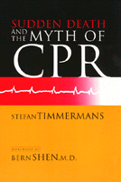

<body bgcolor="#FFFFFF" text="#000000" link="#0000FF" vlink="#CC0000" alink="#CC0000"><center><hr width="350" size="1" align="center" noshade>Restoring dignity to sudden death<hr width="350" size="1" align="center" noshade><p><a href="https://cdcshoppingcart.uchicago.edu/Cart/ChicagoBook.aspx?ISBN=9781566397155&&PRESS=temple" target="_top">Buy this book!</a> | <a href="https://cdcshoppingcart.uchicago.edu/Cart/Cart.aspx?PRESS=temple" target="_top">View Cart</a> | <a href="https://cdcshoppingcart.uchicago.edu/Cart/Cart.aspx?PRESS=temple" target="_top">Check Out</a></p><p></p></center><!--none//--><h1>Sudden Death and the Myth of CPR</h1>
<H2><!-- Foreword by Bern Shen, M.D. --></H2>
<h3>Stefan Timmermans, foreword by Bern Shen</h3>
<P>cloth 1-56639-715-4 $59.50, Jul 99, <FONT COLOR=#990033>Out of Stock Unavailable</FONT>
<br>paper 1-56639-716-2 $29.95, Jul 99, <FONT COLOR=#990033>Available</FONT>
<br>Electronic Book 1-43990-513-4 $29.95 <FONT COLOR=#990033>Out of Stock Unavailable</FONT>
<BR> 272 pp
6x9
3&nbsp;figures
</P><h3 align="center"><P><font color="#996633">Nominated for the C. Wright Mills Book Award,
2000</font></P>
</H3>
<BLOCKQUOTE><I>"Out of his immersion in the sequestered inner world of the hospital emergency departments where sudden death and resuscitative efforts generally take place, Timmermans arrives at illuminating philosophical and sociological insights into how we all are, and ought to be, implicated in these processes, and admirable suggestions about how we can help to make them more dignified, consoling, and meaningful."</I>
<BR>&#151<B>Renée C. Fox</B>, Annenberg Professor Emerita of the Social Sciences, University of Pennsylvania<I></I></BLOCKQUOTE>
<p><i>Sudden Death and the Myth of CPR</i> is for anyone who has taken a CPR course or who believes the images from television dramas. It is also for families of victims and survivors of CPR. It will engage emergency personnel, others in the medical field, and anyone concerned with ethical issues of death and dying.
<p>Anyone who has ever taken a CPR course has wondered, "What would happen if I actually had to use CPR?" In Western societies, the life-saving power of resuscitation has the status of a revered cultural myth. It promises life in the face of sudden death, but the reality is that lives are rarely saved. Medical researchers estimate the survival rate for out-of-hospital CPR to be between 1 and 3 percent. <i>Sudden Death and the Myth of CPR </i>explores the history of this medical innovation and the promotion of its effectiveness.
<p>The overuse of resuscitation, Timmermans explains, defines people's experience with sudden death, something he learned first-hand by following the practice of life-saving from street corner to emergency room. He argues that very few people are successfully resuscitated without brain damage despite the promotion of CPR's effectiveness through powerful media images. In vivid accounts of the day-to-day practices of cardiopulmonary resuscitation in one of the only studies of sudden death, Timmermans records the astonishingly frank comments of emergency personnel. Doctors, nurses, social workers, and paramedics express emotions from cynicism about going through the futile motions to genuine concern for victims' family members.
<p>If a person who was supposed to keep on living dies at the end of a resuscitative attempt, how socially meaningful is the dying? Timmermans asks tough questions and addresses the controversial ethical issues about the appropriateness of interfering with life and death. He suggests policy reforms and the restoration of dignity to sudden death.
<BR>&nbsp;<h2>Excerpt</h2><P>Excerpt available at <a href="http://www.temple.edu/tempress">www.temple.edu/tempress</a></p>
<BR>&nbsp;<h2>Reviews</h2>
<p><i>"This deeply disturbing book documents the failure of modern society to deal with sudden death. Timmermans combines ethnographic observations in various Emergency Rooms with a detailed history of the emergence of CPR to debunk the myth that CPR is successful. Timmermans is a wise and humane guide through the tricky ethical issues surrounding sudden death. He argues for a new ethical code to restore dignity and choice to the dying process. This important and insightful book deserves to become a classic in medical sociology."</i>
<br>&#151<b>Trevor Pinch</b>, Cornell University
<p><i>"A compassionate, meticulous portrayal of sudden death. Heroics are entirely banished in this first-ever ethnography of cardio-pulmonary resuscitation, and the record is set straight through a skillful, eye-opening account of the routines and practices of emergency medicine.... [T]his is an indispensable read for social scientists and historians of technology and medicine, and also for specialists in emergency medicine and health-care professionals involved with death and dying."</i>
<br>&#151<b>Margaret Lock</b>, author of the award-winning <i>Encounters with Aging: Mythologies of Menopause in Japan and North America</i>
<BR>&nbsp;<h2>Contents</h2><P>
<P>Foreword &#150 Bern Shen, M.D.
<br>Preface
<br>Introduction: What They Didn't Tell You in Your CPR Course</I>
<br>1. Death Awareness in the United States
<br>2. The Search for the Best Resuscitation Technique
<br>3. CPR for All
<br>4. Lifesaving in Action
<br>5. Deciding Life and Death
<br>6. "There Is a Code and a Code"
<br>7. Saving Life or Saving Death?
<br>Appendix: Methodology
<br>Notes
<br>References
<br>Index
</P><BR>&nbsp;<H2>About the Author(s)</H2>
<table><tr><td valign="top"><img src="/tempress/authors/1388_au1.gif" height="90" width="75"></td><td width="100%" valign="middle"><p><B>Stefan Timmermans</B> is Assistant Professor of Sociology at Brandeis University and is widely published on the topic of health care.</P></td></tr></table>
<BR><H2>Subject Categories</H2>
<p><A HREF="/tempress/health.html" TARGET="_top">Health and Health Policy</a>
<BR><A HREF="/tempress/sociology.html" TARGET="_top">Sociology</a>
<BR><A HREF="/tempress/philosophy.html" TARGET="_top">Philosophy and Ethics</a>
</p>
<p align="center"><a href="https://cdcshoppingcart.uchicago.edu/Cart/ChicagoBook.aspx?ISBN=9781566397155&&PRESS=temple" target="_top">Buy this book!</a> | <a href="https://cdcshoppingcart.uchicago.edu/Cart/Cart.aspx?PRESS=temple" target="_top">View Cart</a> | <a href="https://cdcshoppingcart.uchicago.edu/Cart/Cart.aspx?PRESS=temple" target="_top">Check Out</a></p><p><font face="Arial" size="1"><a href="copyright.html" onMouseOver="window.status='Web Copyright Policy';return true;" onMouseOut="window.status=''" title="Web Copyright Policy">&copy;</a> 2015 <a href="http://www.temple.edu" target="new" onMouseOver="window.status='Link to Temple University home page';return true;" onMouseOut="window.status=''" title="Link to Temple University home page">Temple University</a>. All Rights Reserved. http://www.temple.edu/tempress/titles/1388_reg.html</font></p>